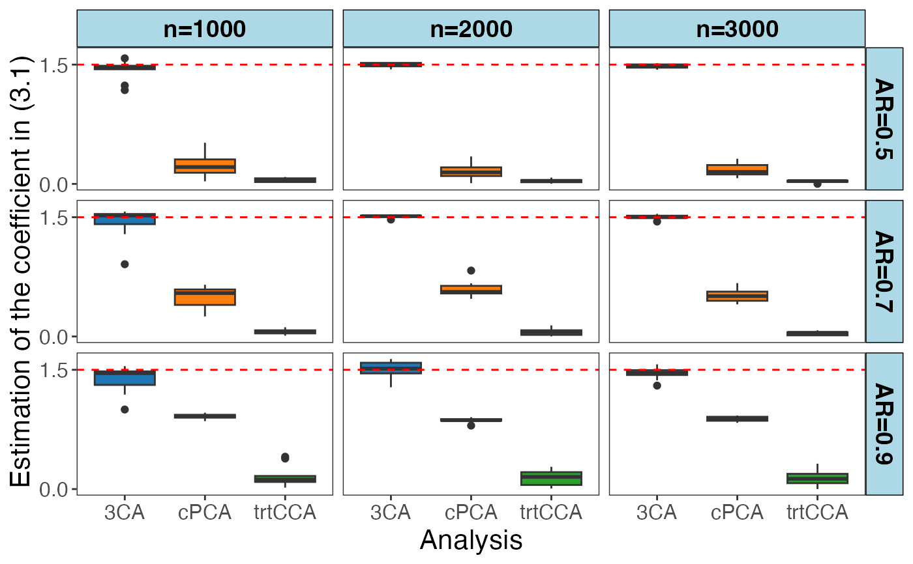

sim_3CA.RdThis function performs simulation to prove the use of 3CA in estimating the target latent factor. The data will be generated by simulating their covariance matrix.
sample size of target group.
sample size of ancillary group.
dimension of one data type denote as X.
dimension of another data type denote as Y.
number of non-zero loadings in each singular vector.
eigenvalues for U1V1, U2V2, U3V3 and U4V4 in target group.
eigenvalues for U1V1, U2V2 in ancillary group.
the tuning parameter between target and ancillary group, if eta = NULL, will use eta estimation.
the error standard deviation of regression which is used for validation of methods.
the coefficient of regression which is used for validation of methods.
the number of replications for simulation.
values of the first off-diagonal element for toeplitz matrices which are set to be the error covariance matrix for Xt and Yt. The error covariances for Xa and Ya are set to be identity matrices.
A data frame containing the estimation of regression coefficients from 3CA, target cross covariance analysis, and cPCA on one data type.
library(CEA)
library(ggsci)
library(ggplot2)
library(tidyverse)
#> ── Attaching core tidyverse packages ──────────────────────── tidyverse 2.0.0 ──
#> ✔ dplyr 1.1.4 ✔ readr 2.1.5
#> ✔ forcats 1.0.0 ✔ stringr 1.5.1
#> ✔ lubridate 1.9.3 ✔ tibble 3.2.1
#> ✔ purrr 1.0.2 ✔ tidyr 1.3.1
#> ── Conflicts ────────────────────────────────────────── tidyverse_conflicts() ──
#> ✖ dplyr::filter() masks stats::filter()
#> ✖ dplyr::lag() masks stats::lag()
#> ℹ Use the conflicted package to force all conflicts to become errors
n_candidates <- c(1000, 2000, 3000)
AR_candidates <- c(0.5, 0.7, 0.9)
results <- setNames(data.frame(matrix(ncol = 6, nrow = 0)),
c("est_trt_cca", "est_ctst_cca", "est_ctst_pca", "eta_est",
"SampleSize", "AR"))
for (n in n_candidates) {
for (AR in AR_candidates){
res <- sim_3CA(nt = n, na = n, p = 40, q = 40, s = 10, AR = AR,
lambda_t = c(6, 4, 2, 0), lambda_a = c(2, 0.2), eta = NULL,
lm_sigma = 1, lm_beta = 1.5, repetition = 10)
rownames(res) <- NULL
res$SampleSize <- n
res$AR <- AR
results <- rbind(results, res)
}
}
knitr::kable(results, format = "markdown")
#>
#>
#> | est_trt_cca| est_ctst_cca| est_ctst_pca| eta_est| SampleSize| AR|
#> |-----------:|------------:|------------:|--------:|----------:|---:|
#> | -0.0209802| -1.2368525| 0.5172498| 2.854737| 1000| 0.5|
#> | 0.0872773| -1.5477455| 0.1440968| 2.854737| 1000| 0.5|
#> | -0.0831667| 1.4447610| -0.1533753| 2.854737| 1000| 0.5|
#> | -0.0738795| -1.1795960| -0.2965070| 2.854737| 1000| 0.5|
#> | 0.0543877| -1.4864506| -0.3513631| 2.854737| 1000| 0.5|
#> | -0.0600095| 1.4825414| -0.0324646| 2.854737| 1000| 0.5|
#> | 0.0173687| -1.4549040| 0.3120022| 2.854737| 1000| 0.5|
#> | -0.0315356| 1.4404601| 0.2694096| 2.854737| 1000| 0.5|
#> | 0.0365752| 1.5792594| -0.1392153| 2.854737| 1000| 0.5|
#> | -0.0161191| -1.4687494| -0.1331256| 2.854737| 1000| 0.5|
#> | 0.0798216| 1.5708219| -0.6195239| 2.728184| 1000| 0.7|
#> | -0.1164265| -1.5610095| -0.3625244| 2.728184| 1000| 0.7|
#> | -0.0383204| -1.2872079| -0.5514638| 2.728184| 1000| 0.7|
#> | 0.0571000| -1.5219681| 0.5974695| 2.728184| 1000| 0.7|
#> | -0.0105410| 1.5407062| 0.3252949| 2.728184| 1000| 0.7|
#> | -0.0349539| -1.5197670| -0.5010113| 2.728184| 1000| 0.7|
#> | -0.0716059| 1.3991015| 0.5703977| 2.728184| 1000| 0.7|
#> | 0.0799960| 1.5380584| 0.6505025| 2.728184| 1000| 0.7|
#> | -0.0560144| 0.9088249| -0.2525348| 2.728184| 1000| 0.7|
#> | -0.0409687| -1.4531989| -0.5405366| 2.728184| 1000| 0.7|
#> | -0.0346421| -1.5213396| -0.9452974| 2.654177| 1000| 0.9|
#> | -0.0182702| 1.5456862| 0.9374020| 2.654177| 1000| 0.9|
#> | -0.1695305| -1.4627307| -0.8878040| 2.654177| 1000| 0.9|
#> | -0.1062925| 1.4400354| -0.9235746| 2.654177| 1000| 0.9|
#> | 0.1238721| 1.4527998| 0.9605837| 2.654177| 1000| 0.9|
#> | -0.4065415| -1.1883317| -0.9204522| 2.654177| 1000| 0.9|
#> | -0.0841756| -1.4689642| -0.9165333| 2.654177| 1000| 0.9|
#> | -0.1503872| -1.4839971| 0.9168881| 2.654177| 1000| 0.9|
#> | -0.3840636| -1.0005857| -0.8546113| 2.654177| 1000| 0.9|
#> | 0.1148730| 1.2660071| 0.8925006| 2.654177| 1000| 0.9|
#> | 0.0420811| -1.4406780| -0.1199315| 2.838672| 2000| 0.5|
#> | -0.0194129| -1.5226228| 0.2993090| 2.838672| 2000| 0.5|
#> | -0.0795081| -1.5220773| -0.1693790| 2.838672| 2000| 0.5|
#> | 0.0266783| 1.4734175| 0.0938433| 2.838672| 2000| 0.5|
#> | -0.0426689| -1.4943247| 0.3448381| 2.838672| 2000| 0.5|
#> | 0.0519646| 1.5183777| -0.2172934| 2.838672| 2000| 0.5|
#> | -0.0023701| -1.4795410| -0.1147134| 2.838672| 2000| 0.5|
#> | 0.0488138| -1.5152319| 0.1808713| 2.838672| 2000| 0.5|
#> | -0.0143245| -1.5266990| -0.0095146| 2.838672| 2000| 0.5|
#> | -0.0359107| 1.4782000| -0.0253732| 2.838672| 2000| 0.5|
#> | -0.0528358| 1.5087264| 0.5297875| 2.911442| 2000| 0.7|
#> | -0.0097773| -1.5122299| 0.4736171| 2.911442| 2000| 0.7|
#> | 0.0607015| 1.5123010| -0.5570080| 2.911442| 2000| 0.7|
#> | -0.0516401| 1.5209793| 0.6407362| 2.911442| 2000| 0.7|
#> | 0.1396035| -1.4925183| -0.6255053| 2.911442| 2000| 0.7|
#> | -0.0087389| 1.5318106| 0.6684845| 2.911442| 2000| 0.7|
#> | -0.0963044| -1.4707795| 0.8288044| 2.911442| 2000| 0.7|
#> | -0.0839428| -1.5060820| 0.5360737| 2.911442| 2000| 0.7|
#> | -0.0558926| -1.5186722| -0.5579224| 2.911442| 2000| 0.7|
#> | -0.0011576| 1.5197478| 0.5644706| 2.911442| 2000| 0.7|
#> | -0.2168969| -1.4525274| -0.7986244| 3.140498| 2000| 0.9|
#> | -0.1139737| -1.5642700| -0.8315294| 3.140498| 2000| 0.9|
#> | -0.0689359| -1.2806564| 0.8657951| 3.140498| 2000| 0.9|
#> | -0.2800237| 1.3111724| -0.9038250| 3.140498| 2000| 0.9|
#> | -0.2006232| 1.5966807| -0.8772336| 3.140498| 2000| 0.9|
#> | -0.2553894| 1.6357384| -0.8850604| 3.140498| 2000| 0.9|
#> | 0.0071597| -1.4610667| 0.8661743| 3.140498| 2000| 0.9|
#> | -0.1926029| 1.5029287| -0.8793229| 3.140498| 2000| 0.9|
#> | -0.0097945| 1.5984618| 0.8624837| 3.140498| 2000| 0.9|
#> | 0.0458833| -1.5271445| -0.8575783| 3.140498| 2000| 0.9|
#> | -0.0174932| -1.4817961| -0.2916827| 3.248190| 3000| 0.5|
#> | 0.0241474| -1.4734643| 0.1079416| 3.248190| 3000| 0.5|
#> | -0.0012928| -1.4463391| 0.2586431| 3.248190| 3000| 0.5|
#> | 0.0478385| 1.5184158| -0.1419127| 3.248190| 3000| 0.5|
#> | -0.0357008| 1.4359166| -0.1725259| 3.248190| 3000| 0.5|
#> | -0.0338858| 1.5016413| -0.1191678| 3.248190| 3000| 0.5|
#> | 0.0354510| -1.5023922| -0.1596739| 3.248190| 3000| 0.5|
#> | -0.0403221| 1.4584074| -0.1197204| 3.248190| 3000| 0.5|
#> | 0.0537640| 1.4728694| -0.0723196| 3.248190| 3000| 0.5|
#> | -0.0383701| -1.5171934| -0.3166460| 3.248190| 3000| 0.5|
#> | 0.0078623| 1.5015570| 0.4435441| 3.080597| 3000| 0.7|
#> | -0.0653765| -1.4769965| 0.5344918| 3.080597| 3000| 0.7|
#> | 0.0207389| -1.5421979| -0.5122555| 3.080597| 3000| 0.7|
#> | 0.0419626| 1.5227244| 0.5796413| 3.080597| 3000| 0.7|
#> | 0.0120630| 1.4454263| 0.5019686| 3.080597| 3000| 0.7|
#> | -0.0499190| 1.5077648| 0.4038469| 3.080597| 3000| 0.7|
#> | 0.0532790| 1.4981548| 0.4654006| 3.080597| 3000| 0.7|
#> | 0.0776233| 1.4954489| 0.4408770| 3.080597| 3000| 0.7|
#> | -0.0099585| -1.4933759| 0.6710303| 3.080597| 3000| 0.7|
#> | -0.0520606| -1.5264396| -0.5741433| 3.080597| 3000| 0.7|
#> | -0.1940407| -1.4995950| -0.9095414| 3.199488| 3000| 0.9|
#> | -0.0766823| 1.4310812| 0.8334697| 3.199488| 3000| 0.9|
#> | -0.0542049| -1.4557275| -0.9076695| 3.199488| 3000| 0.9|
#> | -0.1188579| -1.5551251| 0.8672030| 3.199488| 3000| 0.9|
#> | -0.0735668| 1.4450018| -0.8417413| 3.199488| 3000| 0.9|
#> | -0.3194606| 1.4843705| -0.8563746| 3.199488| 3000| 0.9|
#> | -0.0001785| -1.4618534| 0.9210477| 3.199488| 3000| 0.9|
#> | -0.1841536| -1.3012184| -0.8681092| 3.199488| 3000| 0.9|
#> | -0.1383456| 1.5682527| -0.8867300| 3.199488| 3000| 0.9|
#> | -0.1965826| -1.3672649| -0.9243101| 3.199488| 3000| 0.9|
plot_results <- pivot_longer(results, 1:3, names_to = "Type", values_to = "Estimation")
plot_results$Analysis <- sub(".*?_", "", plot_results$Type)
plot_results$SampleSize <- paste("n=", plot_results$SampleSize, sep = "")
plot_results$AR <- paste("AR=", plot_results$AR, sep = "")
plot_results$Analysis <- factor(plot_results$Analysis, labels = c("ContrastiveCCA", "ContrastivePCA", "TargetCCA"))
p_est_box <- ggplot(data = plot_results)+
geom_boxplot(aes(x = factor(Analysis, levels=c("ContrastiveCCA", "ContrastivePCA", "TargetCCA"), labels=c("3CA", "cPCA", "trtCCA")), y = abs(Estimation), fill = Analysis), show.legend = FALSE)+
facet_grid(cols = vars(SampleSize), rows = vars(AR))+
geom_hline(yintercept = 1.5, linetype = "dashed", color="red")+
scale_y_continuous(breaks = c( 0, 1.5))+
theme_bw()+
theme(
panel.grid = element_blank(),
strip.background = element_rect(fill = "lightblue", color = "black"),
strip.text = element_text(color = "black", face = "bold", size = 14),
text = element_text(size = 14), # Adjust text size
axis.title = element_text(size = 16), # Adjust axis title size
axis.text = element_text(size = 12), # Adjust axis text size
)+
scale_fill_d3()+
labs(y = "Estimation of the coefficient in (3.1)",x="Analysis")
print(p_est_box)
